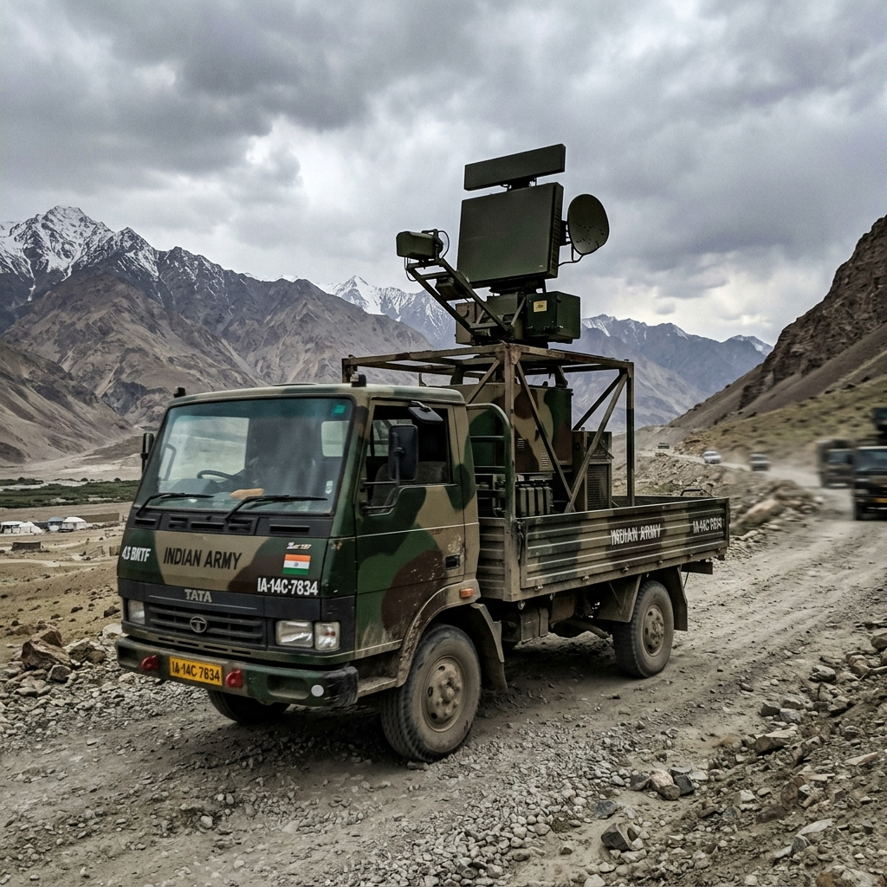
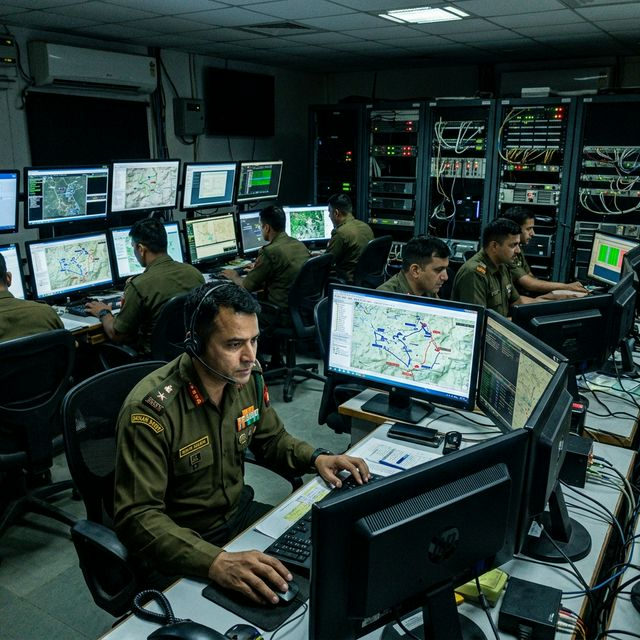

Going to the field
You can't design a system like this from a studio in Bengaluru. We arranged two two-day site visits to a Corps of Signals unit at a formation HQ.



The operating environment: a darkened signals ops room where sensor data from multiple hardware sources converges on a single display surface.
What we observed
The shift handover was the most revealing ritual. Incoming operators needed 18–35 minutes of verbal briefing because there was no structured display of what was active, pending, or cleared.
We watched a duty officer handle two training-scenario drone contacts. His eyes moved between three screens. One hand on a radio. The other writing a register entry.
The mental model gap
The mental model was spatial — he thought in bearings and sectors — but his primary tool was a tabular RF signal log. There was a persistent mismatch between how the problem existed in his mind and how the tools presented it.
We taped that to the wall for the rest of the project.